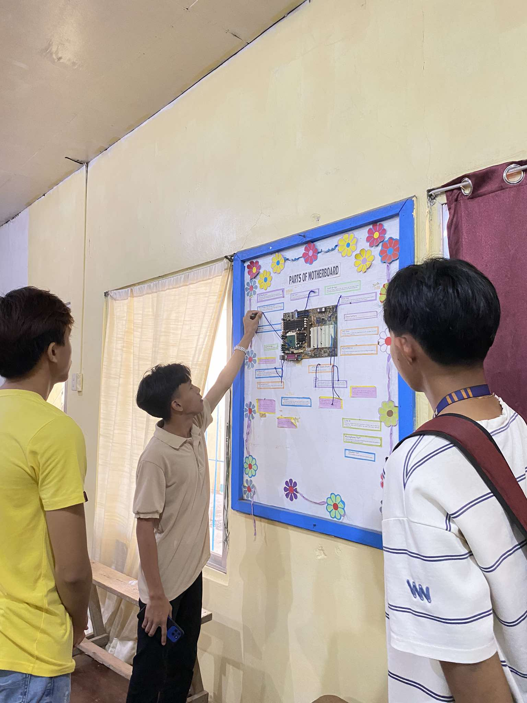

WHAT IS COMPUTER SYSTEM SEVICING?
Computer System Servicing is a technical special profession wherein the installation, maintaining, and repairing of computer systems and networks are performed. As portrayed within the K-12 Curriculum in the Philippines, particularly under the TVL, the CSS prepares students to put into practice knowledge, skills, and procedures to determine and correct hardware and software problems; to install, configure, maintain, and troubleshoot the local area network; and to manage the performance and maintenance of a computer system.
CSS FUTURE JOBS
- GRAPIC DESIGNER - Creating visual content for print and digital media.
- WEB DEVELOPER - Building and maintaining websites using HTML,CSS, and JavaScript.
- TECNICAL SUPPORT REPRESENTATIVE - Helping customers with technical issues related to software products
- TECHNICAL WRITER - Creating documentation for software and hardware products
PARTS OF MOTHERBOARD

ASSEMBLE & DISASSEMBLE OF SYSTEM UNIT

APNHS CSS CLASSROOM

BACK